if(Sys.getenv("USERNAME") == "filse" ) .libPaths("D:/R-library4")
if(Sys.getenv("USERNAME") == "filse" ) path <- "D:/oCloud/RFS/"1 Einstieg in R
1.1 Installation und Einrichten von R & RStudio
Bei R handelt es sich um ein vollständig kostenloses Programm, das Sie unter CRAN herunterladen können. Ebenfalls kostenlos ist die Erweiterung RStudio, die Sie unter hier herunterladen können. RStudio erweitert R um eine deutlich informativere und ansprechendere Oberfläche, Hilfe und Auto-Vervollständigung beim Schreiben von Syntax und insgesamt eine verbesserte Nutzeroberfläche. Jedoch ist RStudio eine Erweiterung von R, sodass Sie beide Programme benötigen.
Note
Installieren Sie zuerst R und dann RStudio, dann erkennt RStudio die installierte R-Version und die beiden Programme verbinden sich in der Regel automatisch. R ist dabei sozusagen der Motor, RStudio unser Cockpit. Wir könnten direkt mit R arbeiten, aber mit RStudio haben wir eine komfortablere Option und einen besseren Überblick.
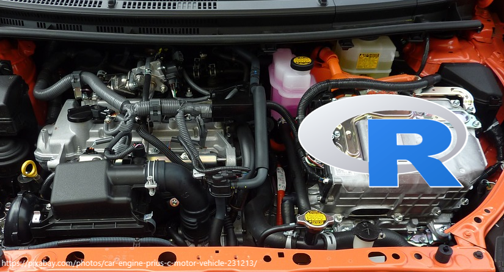
1.2 RStudio einrichten
Öffnen Sie nach erfolgreicher Installation die Anwendung RStudio und Sie sollten folgende Ansicht vor sich sehen:
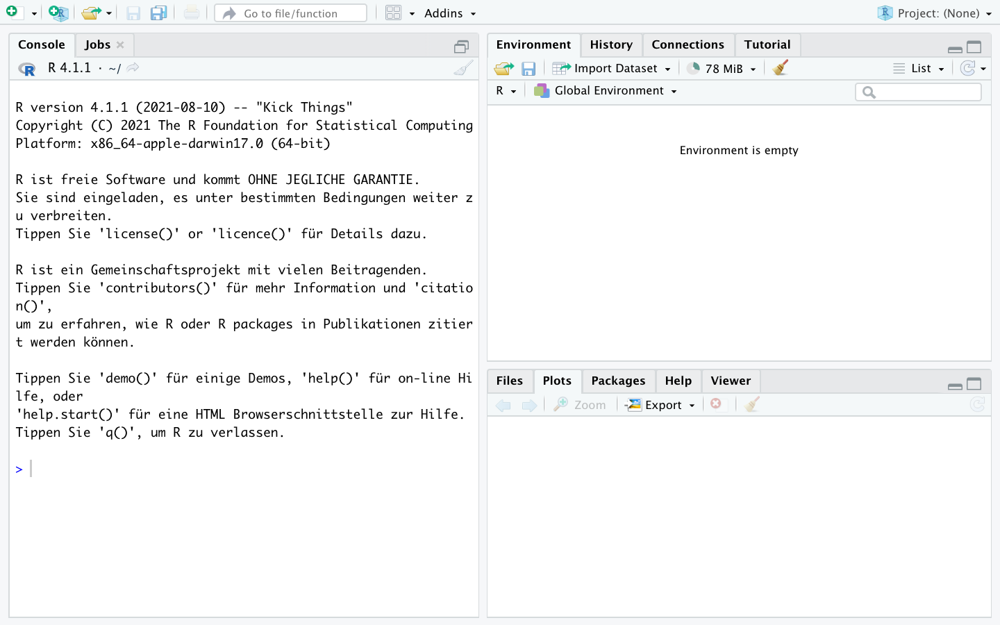
Um Probleme bei der künftigen Arbeit mit R zu vermeiden, deaktivieren Sie bitte das automatische Speichern und Laden des Workspace. Rufen Sie dazu das entsprechende Menü unter dem Reiter “Tools -> Global options” auf und deaktivieren Sie bitte “Restore .RData into workspace at startup” und setzen Sie “Save workspace to .RData on exit:” auf Never. RStudio speichert ansonsten alle geladenen Objekte wenn Sie die Sitzung beenden und lädt diese automatisch wenn Sie das Programm das nächste Mal öffnen. Dies führt erfahrungsgemäß zu Problemen.
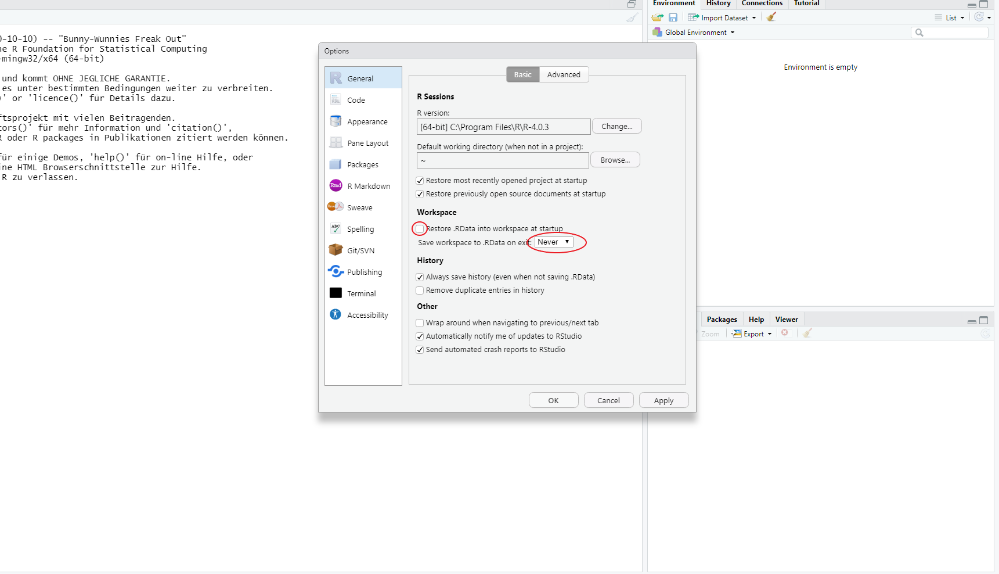
Bestätigen Sie die Einstellungen mit “Apply” und schließen Sie das Fenster mit “OK”.
1.3 Erste Schritte in R
Nach diesen grundlegenden Einstellungen können wir uns an die ersten Schritte in R machen. Öffnen Sie dazu zunächst ein Script, indem Sie auf das weiße Symbol links oben klicken oder drücken Sie gleichzeitig STRG/Command + Shift + N .
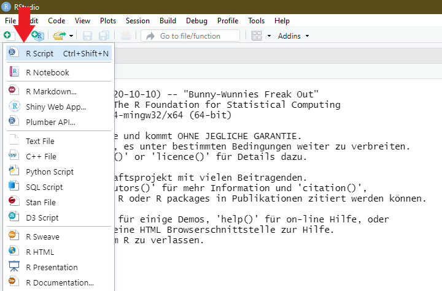
Es öffnet sich ein viertes Fenster, sodass Sie nun folgende Ansicht vor sich haben sollten:
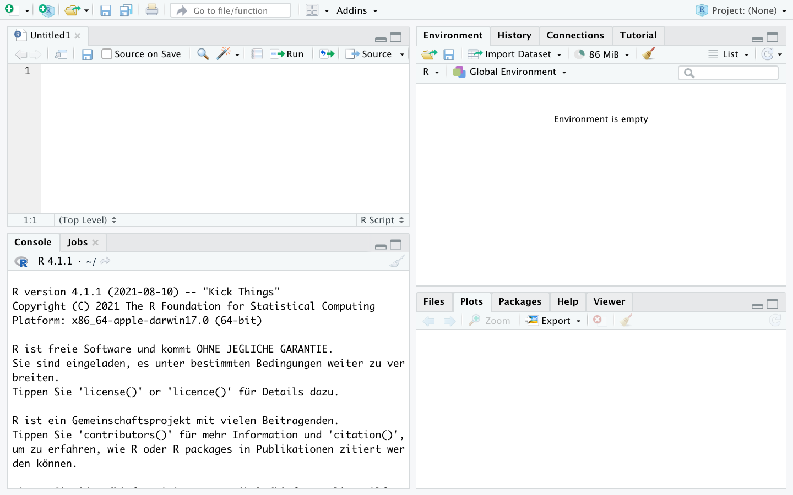
Dieser Scripteditor ist der Ort, an dem wir Befehle erstellen und anschließend durchführen werden. Der Scripteditor dient dabei als Sammlung aller durchzuführenden Befehle. Wir können diese Sammlungen speichern, um sie später wieder aufzurufen und vor allem können wir so Befehlssammlungen mit anderen teilen oder Skripte von anderen für uns selbst nutzen. Wir entwerfen also zunächst im Scripteditor eine Rechnung:
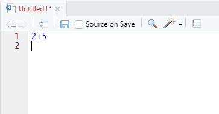
Um diese nun auszuführen, klicken wir in die auszuführende Zeile, sodass der Cursor in dieser Zeile ist und drücken gleichzeitig STRG und Enter (Mac-User Command und Enter):
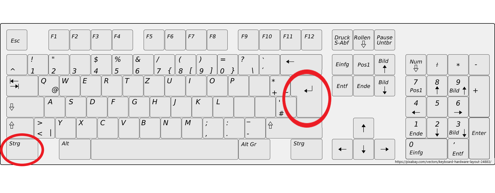
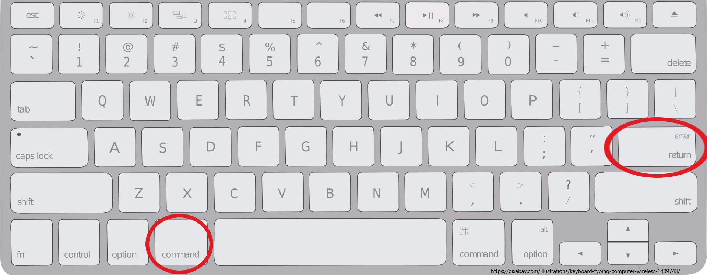
R gibt die Ergebnisse unten in der Console aus:
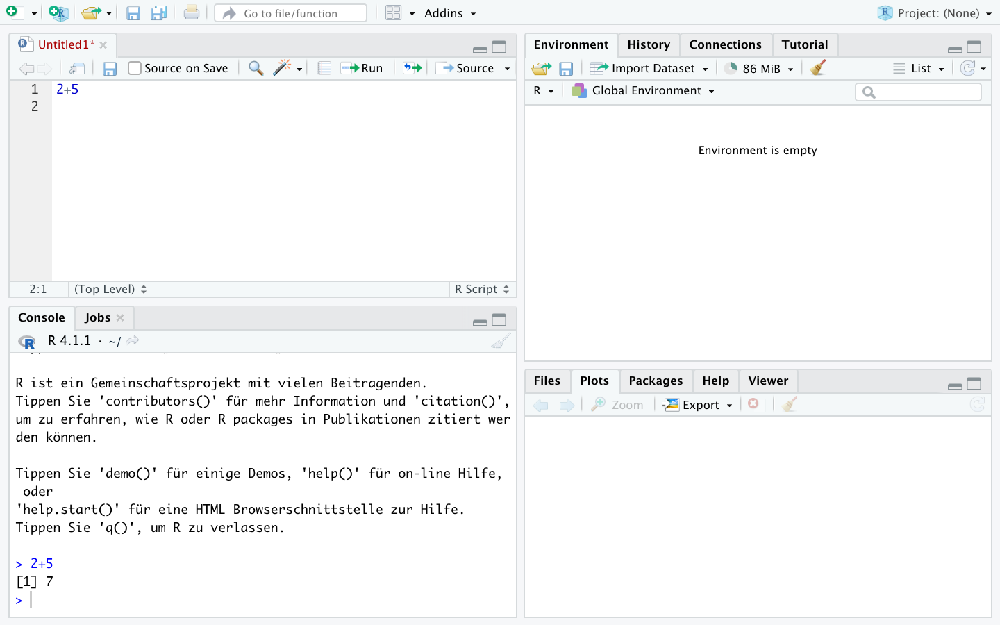
Das funktioniert auch für mehrere Rechnungen auf einmal indem wir mehrere Zeilen markieren und dann wieder STRG und Enter (Mac-User Command und Enter) drücken:
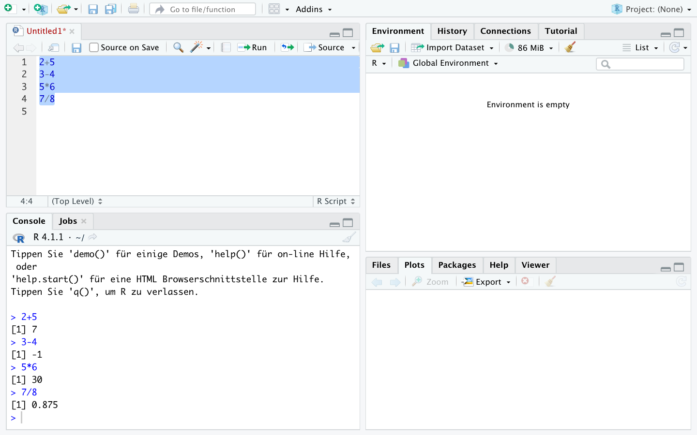
Eingaben aus dem Script-Editor und Ergebnisse aus der Konsole werden in Zukunft so dargestellt:
2+5[1] 73-4[1] -15*6[1] 307/8[1] 0.875R beherrscht natürlich auch längere Berechnungen, zum Beispiel wird auch Punkt vor Strich beachtet:
2+3*2[1] 8(2+3)*2[1] 10Auch weitere Operationen sind möglich:
4^2 ## 4²[1] 16sqrt(4) ## Wurzel [1] 2exp(1) ## Exponentialfunktion (Eulersche Zahl)[1] 2.718282log(5) ## Natürlicher Logarithmus[1] 1.609438log(exp(5)) ## log und exp heben sich gegenseitig auf[1] 5Ergebnisse lassen sich mit einem <- unter einem beliebigen Namen als Objekt speichern. Dann wird R uns nicht das Ergebnis anzeigen, sondern den Befehl in der Konsole wiederholen:
x <- 4/2Im Fenster “Environment” rechts oben sehen wir jetzt das abgelegte Objekt x:
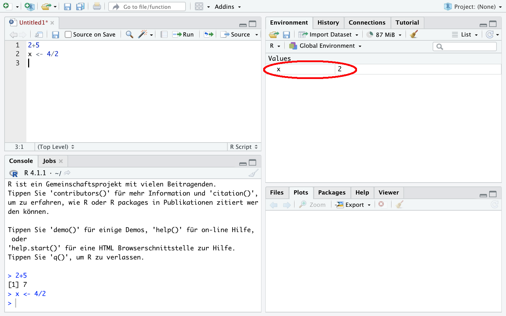
Wir können es später wieder aufrufen:
x[1] 2Außerdem können wir Objekte in Rechnungen weiter verwenden - wir setzen einfach x ein und erstellen zB. y:
y <- x * 5
y[1] 10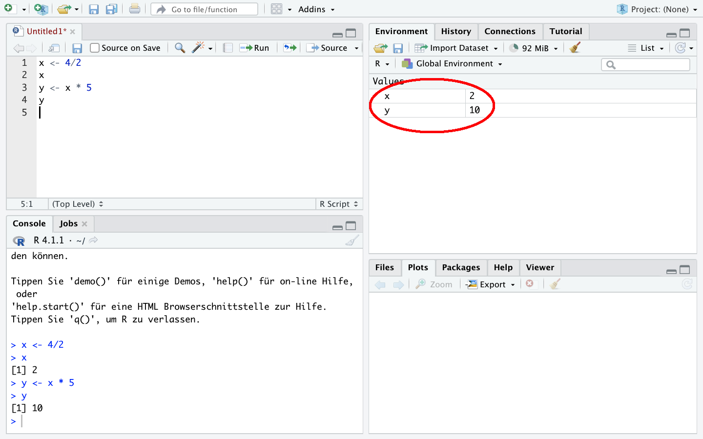
Mit c() lassen sich mehrere Werte unter einem Objekt ablegen und auch mit diesen lässt sich rechnen:
x1 <- c(1,2,3)
x1[1] 1 2 3x1* 2[1] 2 4 6y1 <- c(10,11,9)
y1[1] 10 11 9y1/x1[1] 10.0 5.5 3.0Natürlich können wir Objekte auch wieder löschen und zwar mit rm(). Wenn wir ein nicht existierendes Objekt aufrufen bekommen wir eine Fehlermeldung:
rm(x1)
x1Error in eval(expr, envir, enclos): Objekt 'x1' nicht gefundenMit rm(list = ls()) können alle Objekte aus dem Environment gelöscht werden.
Das Script können wir speichern, um es später wieder aufzurufen.
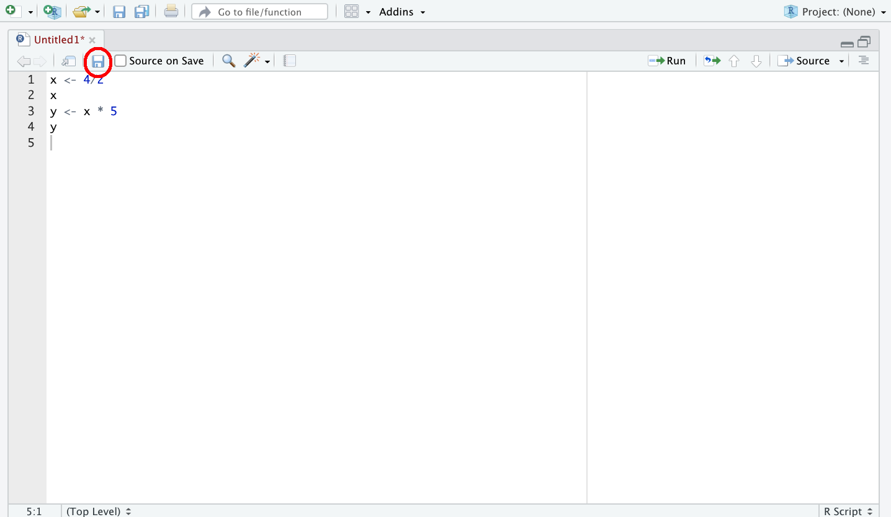
Wichtig ist dabei, der gespeicherten Datei die Endung “.R” zu geben, also zum Beispiel “R_Script1.R”.
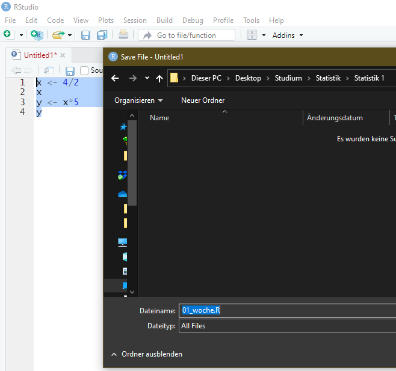
Tipp: Erstellen Sie sich am besten sofort einen Ordner, in dem Sie alle R Scripte und Datensätze1 aus dieser Veranstaltung gesammelt ablegen.
1.4 Aufgaben
Berechnen Sie das aktuelle Alter einer Person, die im Jahr 1977 geboren wurde!
Legen Sie das Ergebnis unter
ageab.Wie können Sie
ageaufrufen, um zu sehen welcher Wert abgelegt wurde?Legen Sie die Anzahl der Studierenden an der Uni Oldenburg (15643) unter
studab.Legen Sie die Anzahl der Professuren an der Uni Oldenburg (210) unter
profab.Berechnen Sie die Anzahl der Studierenden pro Professur an der Uni Oldenburg indem Sie die Objekte
studundprofverwenden.Legen Sie das Ergebnis unter
studprofab und rufen Sie das das Objekt noch einmal auf!Sehen Sie die erstellten Variablen im Environment-Fenster?
Löschen Sie das Objekt
stud. Woran erkennen Sie, dass das funktioniert hat?Legen Sie die Studierendenzahlen der Uni Bremen (19173), Uni Vechta (5333) und Uni Oldenburg (15643) zusammen unter
studsab.Legen Sie die Zahl der Profs der Uni Bremen (322), Uni Vechta (67) und Uni Oldenburg (210) zusammen unter
profsab.Berechnen die Anzahl der Studierenden pro Professur für alle drei Universitäten.
Sie möchten zusätzlich die Zahl der Studierenden (14000) und Professuren (217) der Uni Osnabrück in
studsundprofsablegen. Wie gehen Sie vor?Berechnen Sie für alle vier Universitäten das Verhältnis von Studierenden und Professuren!
Löschen Sie alle Objekte aus dem Environment.
In der ersten Session haben wir ein paar erste Schritte mit der Taschenrechnerfunktion in R unternommen. Die wirkliche Stärke von R ist aber die Verarbeitung von Daten - das lernen wir heute kennen.
Im vorherigen Kapitel haben wir die Studierendenzahlen der Uni Bremen (19173), Uni Vechta (5333) und Uni Oldenburg (15643) zusammen unter studs abgelegt und mit den in profs abgelegten Professurenzahlen ins Verhältnis gesetzt. Das funktioniert soweit gut, allerdings ist es übersichtlicher, zusammengehörige Werte auch zusammen ablegen. Dafür gibt es in R data.frame. Wir können dazu die beiden Objekte in einem Datensatz ablegen, indem wir sie in data.frame eintragen und das neue Objekt unter df ablegen. Wenn wir df aufrufen sehen wir, dass die Werte zeilenweise zusammengefügt wurden:
studs <- c(19173,5333,15643) ## Studierendenzahlen unter "studs" ablegen
profs <- c(322,67,210) ## Prof-Zahlen unter "profs" ablegen
df <- data.frame(studs, profs)
df ## zeigt den kompletten Datensatz an studs profs
1 19173 322
2 5333 67
3 15643 210In der ersten Zeile stehen also die Werte der Uni Bremen, in der zweiten Zeile die Werte der Uni Vechta usw. Die Werte können wir dann mit datensatzname$variablenname aufrufen. So können wir die Spalte profs anzeigen lassen:
df$profs [1] 322 67 210Mit colnames() können wir die Variablen-/Spaltennamen des Datensatzes anzeigen lassen, zudem können wir mit nrow und ncol die Zahl der Zeilen bzw. Spalten aufrufen:
colnames(df) ## Variablen-/Spaltennamen anzeigen[1] "studs" "profs"ncol(df) ## Anzahl der Spalten/Variablen[1] 2nrow(df) ## Anzahl der Zeilen/Fälle[1] 3Neue zusätzliche Variablen können durch datensatzname$neuevariable in den Datensatz eingefügt werden:
df$stu_prof <- df$studs/df$profs
## df hat also nun eine Spalte mehr:
ncol(df) [1] 3df studs profs stu_prof
1 19173 322 59.54348
2 5333 67 79.59701
3 15643 210 74.490481.5 Variablentypen
Wir können auch ein oder mehrere Wörter in einer Variable ablegen, jedoch müssen Buchstaben/Wörter immer in "" gesetzt werden.
df$uni <- c("Uni Bremen","Uni Vechta", "Uni Oldenburg")
df studs profs stu_prof uni
1 19173 322 59.54348 Uni Bremen
2 5333 67 79.59701 Uni Vechta
3 15643 210 74.49048 Uni OldenburgDamit haben wir einen neuen Variablentypen kennen gelernt. Grundsätzlich gibt es in R zwei Variablentypen: numeric (enthält Zahlen) und character (enthält Text oder Zahlen, die als Text verstanden werden sollen). Darüber hinaus gibt es noch weitere Typen, die besprechen wir wenn sie nötig sind, zB. gibt es “integer” für numerische Variablen mit ausschließlich ganzzahligen Ausprägungen. Mit class() kann die Art der Variable untersucht werden oder mit is.numeric() bzw. is.character() können wir abfragen ob eine Variable diesem Typ entspricht:
class(df$profs)[1] "numeric"class(df$uni)[1] "character"is.numeric(df$profs)[1] TRUEis.numeric(df$uni)[1] FALSEis.character(df$profs)[1] FALSEMit as.character() bzw. as.numeric() können wir einen Typenwechsel erzwingen:
as.character(df$profs) ## die "" zeigen an, dass die Variable als character definiert ist[1] "322" "67" "210"Das ändert erstmal nichts an der Ausgangsvariable df$profs:
class(df$profs)[1] "numeric"Wir können diese Umwandlung auch permanent machen, indem wir df$profs mit der umgewandelten Variante überschreiben:
df$profs <- as.character(df$profs)
df$profs [1] "322" "67" "210"class(df$profs)[1] "character"Mit character-Variablen kann nicht gerechnet werden, auch wenn sie Zahlen enthalten:
df$profs / 2 Error in df$profs/2: nicht-numerisches Argument für binären OperatorWir können aber natürlich df$profs spontan in numeric umwandeln, um mit den Zahlenwerten zu rechnen:
as.numeric(df$profs) / 2[1] 161.0 33.5 105.0Wenn wir Textvariablen in numerische Variablen umwandeln, bekommen wir NAs ausgegeben. NA steht in R für fehlende Werte:
as.numeric(df$uni)Warning: NAs durch Umwandlung erzeugt[1] NA NA NAR weiß (verständlicherweise) also nicht, wie die Uni-Namen in Zahlen umgewandelt werden sollen.
1.6 Zeilen oder Spalten auswählen
Wir können Einträge aus einem Datensatz mit [ ] auswählen:
df[1,1] ## erste Zeile, erste Spalte[1] 19173df[1,] ## erste Zeile, alle Spalten studs profs stu_prof uni
1 19173 322 59.54348 Uni Bremendf[,1] ## alle Zeilen, erste Spalte (entspricht hier df$studs)[1] 19173 5333 15643df[,"studs"] ## alle Zeilen, Spalte mit Namen studs -> achtung: ""[1] 19173 5333 15643Natürlich können wir auch mehrere Zeilen oder Spalten auswählen. Dafür müssen wir wieder auf c( ) zurückgreifen:
df[c(1,2),] ## 1. & 2. Zeile, alle Spalten studs profs stu_prof uni
1 19173 322 59.54348 Uni Bremen
2 5333 67 79.59701 Uni Vechtadf[,c(1,3)] ## alle Zeilen, 1. & 3. Spalte (entspricht df$studs & df$stu_prof) studs stu_prof
1 19173 59.54348
2 5333 79.59701
3 15643 74.49048df[,c("studs","uni")] ## alle Zeilen, Spalten mit Namen studs und uni studs uni
1 19173 Uni Bremen
2 5333 Uni Vechta
3 15643 Uni Oldenburg1.7 Zeilen auswählen mit Bedingungen
In diese eckigen Klammern können wir auch Bedingungen schreiben, um so Auswahlen aus df zu treffen.
df ## vollständiger Datensatz studs profs stu_prof uni
1 19173 322 59.54348 Uni Bremen
2 5333 67 79.59701 Uni Vechta
3 15643 210 74.49048 Uni Oldenburgdf[df$uni == "Uni Oldenburg", ] ## Zeilen in denen uni gleich "Uni Oldenburg", alle Spalten studs profs stu_prof uni
3 15643 210 74.49048 Uni Oldenburgdf[df$studs > 10000, ] ## Zeilen mit studs > 10000, alle Spalten studs profs stu_prof uni
1 19173 322 59.54348 Uni Bremen
3 15643 210 74.49048 Uni Oldenburgdf[df$uni == "Uni Oldenburg" & df$studs > 10000, ] ## mehrere Bedingungen studs profs stu_prof uni
3 15643 210 74.49048 Uni Oldenburgdf[df$uni == "Uni Oldenburg" & df$studs < 10000, ] ## Kombination gibt es nicht[1] studs profs stu_prof uni
<0 Zeilen> (oder row.names mit Länge 0)## Zeilen von uni auswählen:
df$uni[ df$studs < 10000 ]## wichtig: kein Komma![1] "Uni Vechta"Wir können die Ausgaben dann auch in einem neuen data.frame-Objekt ablegen:
ueber_10tsd <- df[df$studs > 10000, ]
ueber_10tsd studs profs stu_prof uni
1 19173 322 59.54348 Uni Bremen
3 15643 210 74.49048 Uni Oldenburgclass(ueber_10tsd)[1] "data.frame"1.8 Datensätze einlesen
In der Regel werden wir aber Datensätze verwenden, deren Werte bereits in einer Datei gespeichert sind und die wir lediglich einlesen müssen. Dafür gibt es unzählige Möglichkeiten. Wir werden hier vor allem den Import von csv-Dateien verwenden. csv 2 bezeichnet ein verbreitetes Dateiformat zur Speicherung oder zum Austausch einfach strukturierter Daten. Wesentlich für unsere Zwecke hier ist, dass in csv-Dateien die Spalten eines Datensatzes mit einem Trennzeichen gekennzeichnet sind. Verbreitete Trennzeichen sind Komma, Doppelpunkt oder Semikolon. Für alle weiteren Dateien, die wir im Lauf dieser Veranstaltung verwenden werden, ist das Semikolon als Trennzeichen gesetzt. Unser Datensatz df sieht im csv-Format so aus:

Warning
Nun wollen wir also eine csv-Datei einlesen, konkret eine reduzierte Version des bereits in der Vorlesung erwähnten Allbus-Datensatzes für das Jahr 2016.3 Sie finden die csv-Datei “allbus2016_kompakt.csv” auf StudIP:
Um den Datensatz nun in R zu importieren, sind zwei Schritte notwendig. Zuerst müssen wir R mitteilen unter welchem Dateipfad der Datensatz zu finden ist. Der Dateipfad ergibt sich aus der Ordnerstruktur Ihres Gerätes, so würde der Dateipfad im hier dargestellten Fall “C:/Users/Andreas/Dokumente/Statistik/” lauten:
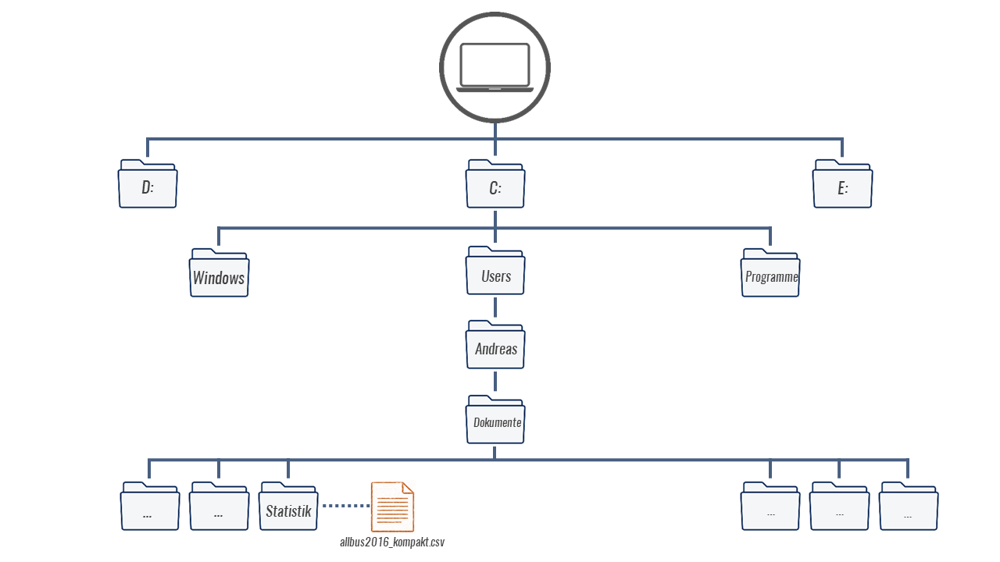
Natürlich hängt der Dateipfad aber ganz davon ab, wo Sie den Datensatz gespeichert haben. Um den Pfad des Ordners herauszufinden, klicken Sie bei Windows in die obere Adresszeile im Explorerfenster, bei Mac finden Sie den Pfad indem Sie einmal mit der rechten Maustaste auf die Datei und unter Informationen den Reiter “Ort” wählen.
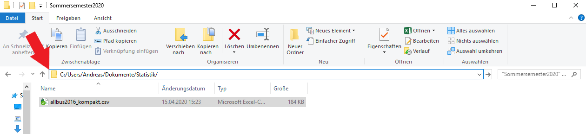
Diesen Dateipfad müssen wir also R mitteilen. Dafür gibt es mehrere Varianten, die einfachste ist setwd(). Wir setzen in die Klammern den Pfad des Ordners ein, in dem der Allbus-Datensatz gespeichert ist. Wichtig dabei ist dass Sie ggf. alle \ durch /ersetzen müssen:
setwd("C:/Users/Andreas/Dokumente/Statistik/")Mit getwd() lässt sich überprüfen, ob das funktioniert hat:
getwd()Hier sollte der mit setwd() gesetzte Pfad erscheinen.
Ist das der Fall, können wir den eigentlichen Einlesebefehl read.table verwenden:
a16 <- read.table("allbus2016_kompakt.csv", sep = ";", header = T, stringsAsFactors = F)Der Einlesevorgang besteht aus zwei Teilen: zuerst geben wir mit a16 den Namen an, unter dem R den Datensatz ablegt. Nach dem <- steht dann der eigentliche Befehl read.table(), der wiederum mehrere Optionen enthält. Als erstes geben wir den genauen Datensatznamen an - inklusive der Dateiendung. Darüber hinaus teilen wir R mit sep mit, dass ; als Trennzeichen gesetzt wurde und mit header = T teilen wir R zudem mit, dass die erste Zeile aus dem Datensatz als Spaltennamen verwendet werden soll. stringsAsFactors = F legt fest, dass Variablen mit Buchstaben (sog. strings) nicht in das Spezialformat factor überführt werden sollen (warum und was factor-Variablen sind, besprechen wir später).
Würden hier jetzt einfach a16 eintippen bekämen wir den kompletten Datensatz angezeigt. Für einen Überblick können wir head verwenden:
head(a16) respid eastwest german sex mborn yborn age agec pyborn page pagec di01a educ
1 1 2 1 2 9 1968 47 3 -10 -10 -10 1800 3
2 2 2 1 1 9 1963 52 3 -10 -10 -10 2000 3
3 3 1 1 1 1 1955 61 4 -10 -10 -10 2500 2
4 4 1 1 2 7 1961 54 3 -10 -10 -10 860 2
5 5 1 1 1 1 1945 71 4 -10 -10 -10 -7 5
6 6 1 1 1 8 1967 49 3 -10 -10 -10 2500 3
mstat gkpol land inc
1 1 2 160 1800
2 1 7 112 2000
3 1 3 60 2500
4 1 7 111 860
5 1 6 50 -9
6 4 2 30 2500Mit nrow und ncol können wir kontrollieren, ob das geklappt hat. Der Datensatz sollte 3490 Zeilen und 17 Spalten haben:
nrow(a16)[1] 3490ncol(a16)[1] 17Mit View(a16) öffnet sich zudem ein neues Fenster, in dem wir den gesamten Datensatz ansehen können.
Natürlich können wir wie oben auch aus diesem, viel größeren, Datensatz Zeilen und Spalten auswählen. Zum Beispiel können wir die Befragten auswählen, die älter als 87 Jahre alt sind und diese unter senior ablegen:
senior <- a16[a16$age > 87,]Möchten wir die genauen Altersangaben der Befragten aus senior sehen, können wir die entsprechende Spalte mit senior$age aufrufen:
senior$age [1] 88 88 88 90 88 88 91 90 90 88 88 88 88 91 90 89 88 89 91 97 89 88 88 90 93Außerdem hat senior natürlich deutlich weniger Zeilen als a16:
nrow(senior)[1] 25Wie wir beim Überblick gesehen haben, gibt es aber noch deutlich mehr Variablen im Allbus als age und nicht alle haben so aussagekräftige Namen - z.B. gkpol. Um diese Variablennamen und auch die Bedeutung der Ausprägungen zu verstehen brauchen wir das Codebuch. In ihm sind alle Variablennamen sowie die Ausprägungen erläutert. Laden Sie daher auch das Codebuch für den Allbus (Codebuch_allbus.pdf) herunter, wir werden es häufig brauchen!
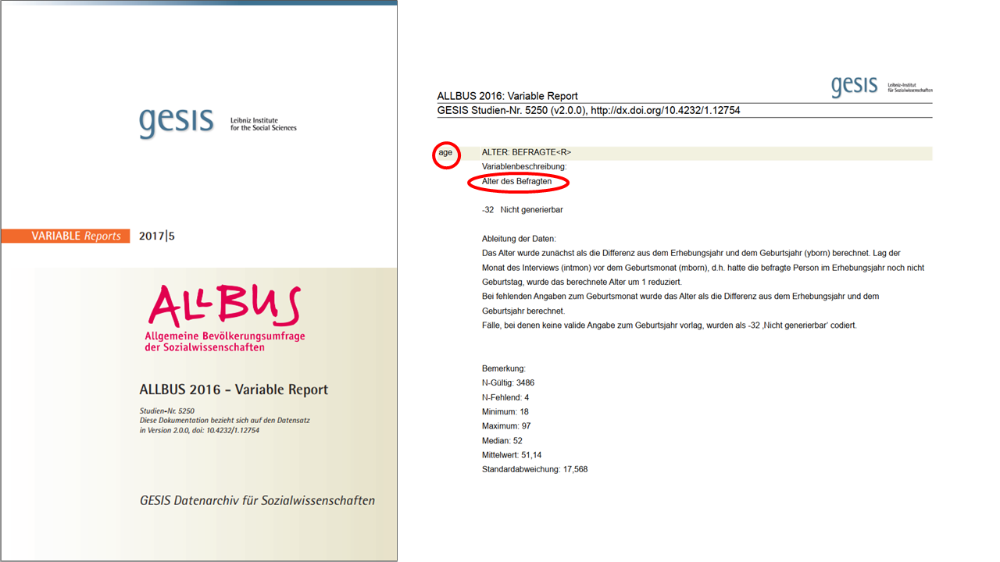
1.9 Aufgaben
Sie finden in StudIP im Ordner Übungsunterlagen den Allbus 2016 unter dem Namen
allbus2016_kompakt.csv. Laden Sie die Datei herunter und speichern Sie sie ab. Öffnen Sie die Datei bitte nicht direkt mit Excel, auch wenn Ihnen dies wahrscheinlich vorgeschlagen wird.Laden Sie den Datensatz
allbus2016_kompakt.csvin R und legen Sie den Datensatz untera16ab.Nutzen Sie
head()undView(), um sich einen Überblick über den Datensatz zu verschaffen.Wie viele Befagte (Zeilen) enthält der Datensatz?
Lassen Sie sich die Variablennamen von
a16anzeigen!Die Variable
sexgibt das Geschlecht der Befragten an. Welcher Variablentyp ist für die Variable festgelegt, welches Skalenniveau hat die Variable?Was verbirgt sich hinter der Variable
gkpol? Sehen Sie im Codebuch nach! Welche Bedeutung hat die Ausprägung 2 für diese Variable?Welches Skalenniveau hat
gkpol?4Welcher Variablentyp ist in R für
gkpolfestgelegt? Ändern Sie den Variablentyp.Welche Information ist in der Variable
respidabgelegt?Wie können Sie sich die Zeile anzeigen lassen, welche den/die Befragte*n mit der
respid3469 enthält?Wie alt ist der/die Befragte mit der
respid3469? Welches Geschlecht hat die Person?Erstellen Sie eine neue Variable mit dem Alter der Befragten im Jahr 2020!
Wählen Sie alle Befragten aus, die nach 1960 geboren wurden legen Sie diese Auswahl unter
nach_1960ab.Wie viele Spalten hat
nach_1960? Wie viele Zeilen? Nutzen Sie für Ihre Antwort die Befehle die wir kennen gelernt haben.
Was das ist, werden wir in der kommenden Session lernen.↩︎
Abkürzung für comma-separated values↩︎
Allbus steht für “Allgemeine Bevölkerungsumfrage der Sozialwissenschaften” und ist eine zweijährlich durchgeführte allgemeine Umfrage, welche repräsentative viele Aspekte der politischen und sozialen Einstellungen in Deutschland abfragt. Als Studierende können Sie sich sowohl den Allbus 2016 als auch die Ausgaben für weitere Jahre hier unkompliziert herunterladen: https://www.gesis.org/allbus/download/download-querschnitte/↩︎
Diese Frage ist eine inhaltliche, R hilft Ihnen hier nicht weiter.↩︎